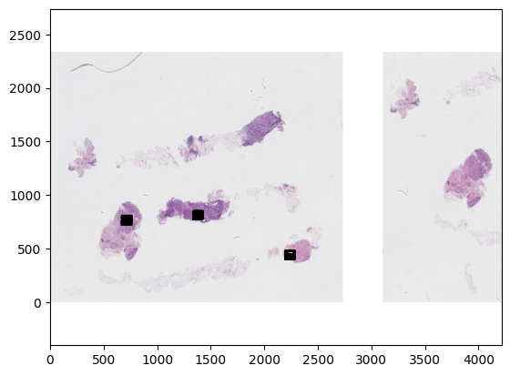
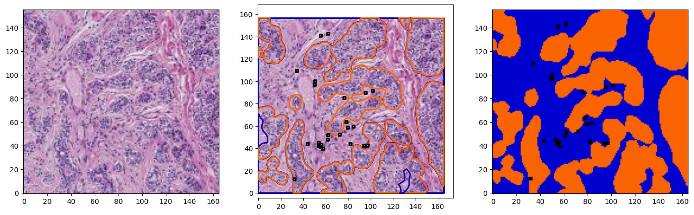
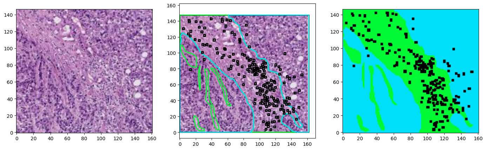
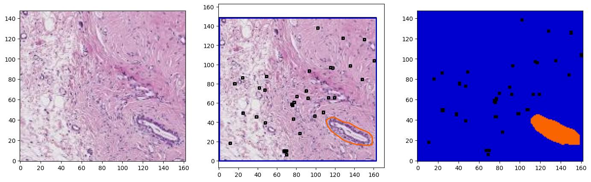
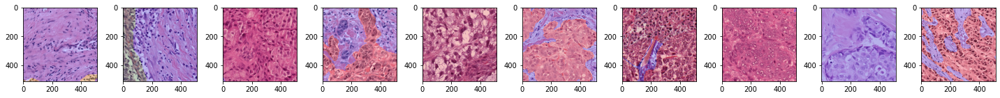

TIGER#
Download data#
!aws s3 ls --no-sign-request s3://tiger-training/
PRE wsibulk/
PRE wsirois/
PRE wsitils/
2022-01-14 14:00:17 2186 data-structure.txt
2022-01-17 13:25:37 578 license.txt
!aws s3 cp --no-sign-request s3://tiger-training/wsirois/wsi-level-annotations/images/100B.tif ./tiger_data/images
download: s3://tiger-training/wsirois/wsi-level-annotations/images/100B.tif to tiger_data/images/100B.tif
!aws s3 cp --no-sign-request s3://tiger-training/wsirois/wsi-level-annotations/annotations-tissue-cells-xmls/100B.xml ./tiger_data/annotations
download: s3://tiger-training/wsirois/wsi-level-annotations/annotations-tissue-cells-xmls/100B.xml to tiger_data/annotations/100B.xml
Setup#
from wholeslidedata import WholeSlideImage, WholeSlideAnnotation
from wholeslidedata.interoperability.asap.backend import AsapWholeSlideImageBackend
from wholeslidedata.visualization.plotting import plot_patch, plot_annotations
from matplotlib import pyplot as plt
import numpy as np
import cv2
from colour import Color
def plot_coordinates(image, coordinates, border_rgb, thickness=1, fill_rgb=None, alpha=1):
overlay = image.copy()
overlay = cv2.polylines(overlay, [np.int32(coordinates)], True, color=border_rgb, thickness=thickness)
if fill_rgb is not None:
overlay = cv2.fillPoly(overlay, [np.int32(coordinates)], color=fill_rgb)
return cv2.addWeighted(overlay, alpha, image, 1 - alpha, 0)
def plot_annotations2(image, annotations, offset, color_map, boxes=False, ratio=4, fill=False):
for annotation in annotations:
rgb_color = color_map[annotation.label.name]
coordinates = (annotation.coordinates -np.array(offset)) /ratio
if fill:
image = plot_coordinates(image, coordinates, border_rgb=rgb_color, fill_rgb=rgb_color)
else:
image = plot_coordinates(image, coordinates, border_rgb=rgb_color)
return image
TIGER_COLORS = {
"roi": "#000000",
"lymphocytes and plasma cells": "#000000",
"invasive tumor": '#00e0f9',
"tumor-associated stroma": '#00f932' ,
"in-situ tumor": '#aef900' ,
"healthy glands": '#f96400',
"necrosis not in-situ": '#f9007d' ,
"inflamed stroma": '#9500f9',
"rest": '#0000ce',
}
TIGER_COLORS_RGB = {name: tuple((int(255*c) for c in Color(color).rgb)) for name, color in tiger_colors.items()}
wsi = WholeSlideImage('./tiger_data/images/100B.tif', backend=AsapWholeSlideImageBackend)
wsa = WholeSlideAnnotation('./tiger_data/annotations/100B.xml', sample_label_names=['roi'])
colors = {label.name: tiger_colors[label.name] for label in wsa.labels}
fig, ax = plt.subplots()
plot_patch(wsi.get_slide(8.0), ax=ax)
plot_annotations(wsa.annotations, ax=ax, scale=1/16)
plt.gca().invert_yaxis()
plt.show()

for idx in range(3):
region = wsi.get_region_from_annotations([wsa.sampling_annotations[idx]], spacing=4.0)
annotations = wsa.select_annotations(*wsa.sampling_annotations[idx].center, *wsa.sampling_annotations[idx].size)
annotations = sorted(annotations, key=lambda x: x.area, reverse=True)
offset = wsa.sampling_annotations[idx].bounds[:2]
annotations_on_image = plot_annotations2(region, annotations, offset=offset, ratio=8, color_map=TIGER_COLORS_RGB,fill=True)
fig, ax = plt.subplots(1,3, figsize=(17,5))
plot_patch(region, ax=ax[0])
plot_patch(region, ax=ax[1])
plot_annotations(annotations, ax=ax[1], scale=1/8, use_base_coordinates=True, color_map=colors)
plot_patch(annotations_on_image, ax=ax[2])
for a in ax:
a.invert_yaxis()
plt.show()



Data Loading - Batch Iterator#
from wholeslidedata.iterators import create_batch_iterator
from wholeslidedata.visualization.plotting import plot_batch
import time
user_config = {
'wholeslidedata': {
'default': {
'yaml_source': "/home/user/pathology-whole-slide-data/docs/source/userguide/notebooks/examples/configs/tigersegmentationdata.yml",
'labels': {
"roi": 0,
"invasive tumor": 1,
"tumor-associated stroma": 2,
"in-situ tumor": 3 ,
"healthy glands": 4,
"necrosis not in-situ": 5,
"inflamed stroma": 6,
"rest": 7,
},
"annotation_parser": {
"sample_label_names": ['roi']
},
'batch_shape': {
'batch_size': 10,
'spacing': 0.5,
'shape': [512,512,3],
},
'point_sampler_name': "RandomPointSampler",
'point_sampler': {
"buffer": {'spacing': "${batch_shape.spacing}", 'value': -256},
}
}
}
}
t1 = time.time()
tiger_batch_iterator = create_batch_iterator(mode="training", user_config=user_config, cpus=4)
print(time.time()-t1)
88.77838516235352
x_batch, y_batch, info = next(tiger_batch_iterator)
plot_batch(x_batch, y_batch, alpha=0.2)
